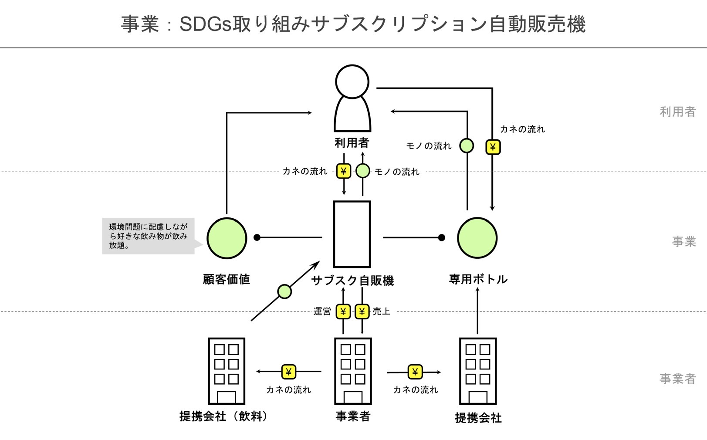

ビジネスモデル図解
SDGs取り組みサブスク制自動販売機

目的
ペットボトルは毎年500万から1,300万トンものプラごみとして世界中の海に流入し、魚や海鳥などの海の生態系を脅かし、人類への悪影響も避けられない状況である。
そのため、ペットボトルのゴミをリサイクル排出されるCo2や、ポイ捨てによる町の環境汚染、及び海の汚染を徹底防止する。
利点
自動販売機をサブスクリプションにすることで、通常の自動販売機よりも安く購入できる。